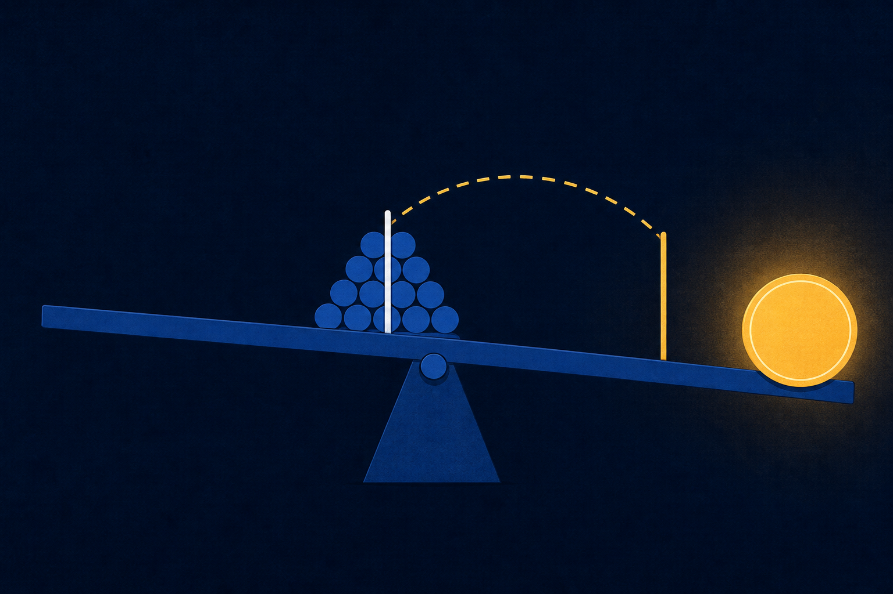
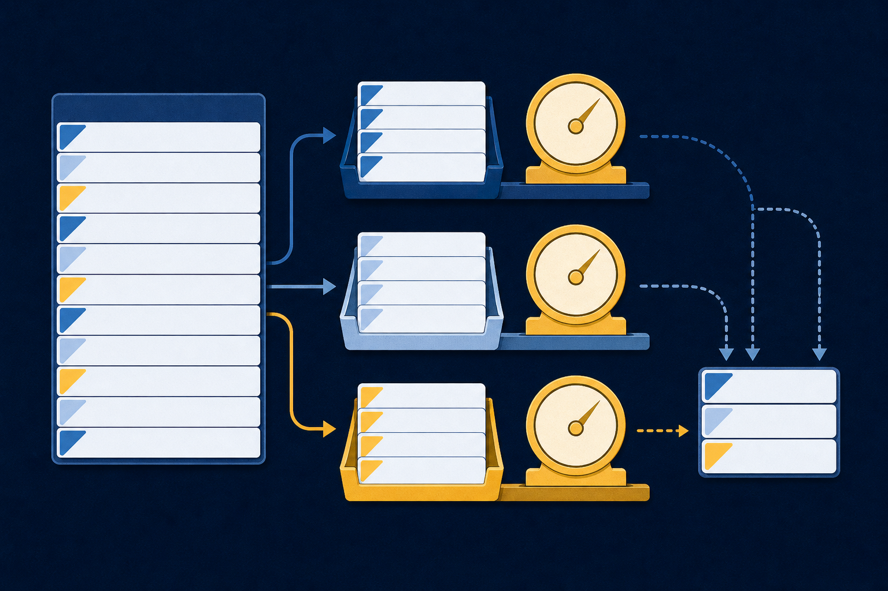

Check structure, types, missing values, and sample rows.
Chapter 5
One average. Two different stories.
Explore distributions before you summarize them.
Opening question: Which number describes a typical order?
Explore distributions before you summarize them.
Opening question: Which number describes a typical order?
Check structure, types, missing values, and sample rows.
Choose measures of center and spread that fit the distribution.
Group records and explain differences across categories.
.info()Structure, types, non-null counts.head() · .tail()Examples from both ends.describe()Numeric center, spread, and limits.value_counts()Category frequencies and odd labels.info() exposes the gaps before they change the math.strfloat64int64str200 orders · 7 source columns · 5 missing cells
.head(3)Did it load as expected?See names, formats, and early records.
.tail(3)Does the file end cleanly?Catch footer text or summary rows.
.describe()What shape do the numbers have?Read count, quartiles, center, spread, and limits.
Analyst check: A valid calculation can still be meaningless.
df_orders['Region'].value_counts(normalize=True)
Which columns have missing values?
?What is the 75th percentile of Price?
?Which product appears most often?
?.info(), .describe(), and .value_counts(). Each method reveals a different part of the dataset.Uses every value. Outliers can pull it.
Uses rank. Extreme values cannot drag it.
Finds the most common numeric or text value.

For this skewed column, the median tells the clearer “typical” story.
Maximum minus minimum. Uses two values.
$1,175.00Average squared distance. Units are dollars squared.
140,394.48Typical distance from the mean in dollars.
$374.69Reason: The 68% rule assumes a roughly bell-shaped distribution. These prices are right-skewed.
.groupby() turns one table into comparable groups.
df_orders.groupby('Region')['Price'].mean()
.mean() inside every group.df_orders.groupby('Region')['Price'].mean()
.agg() shows center, spread, and sample size together.| Region | Priced orders | Mean | Median | Std dev |
|---|---|---|---|---|
| East | 48 | $260.62 | $119.99 | $312.45 |
| North | 29 | $442.23 | $329.99 | $427.42 |
| South | 53 | $302.25 | $119.99 | $384.19 |
| West | 68 | $288.23 | $74.99 | $378.93 |
groupby(...).size()49Counts every East row.
groupby(...).count()['Price']48Counts non-null East prices.
Name what you counted.
region_avg = df_orders.groupby('Region')['Price'].mean()
↓
region_avg.sort_values(ascending=False)
↓
.nlargest() turns a rank question into one line.# Five highest-revenue orders top_5 = df_orders.nlargest( 5, 'Revenue' )
Ties: positions 1-2 and 3-5. Opposite: .nsmallest().
Types, missing values, categories
Center, spread, skew
Region, product, revenue
100-150 word manager brief
Estimated lab time: 4-5 hours · Submit skills_lab_5a.ipynb.
Exit ticket: A column has mean $308, median $120, and standard deviation $375. Write two sentences that explain its shape to a manager.
Report the distribution, not only the average.